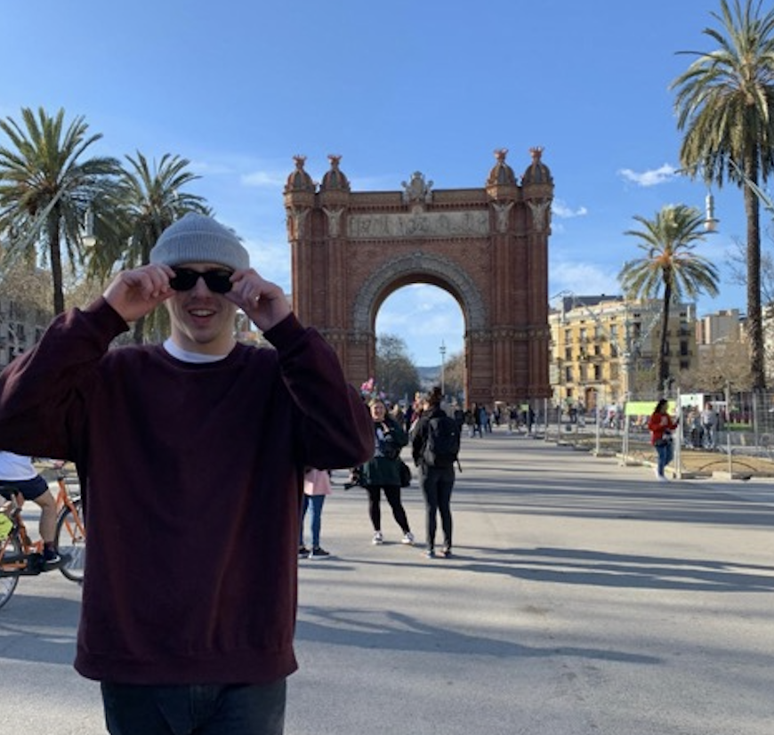
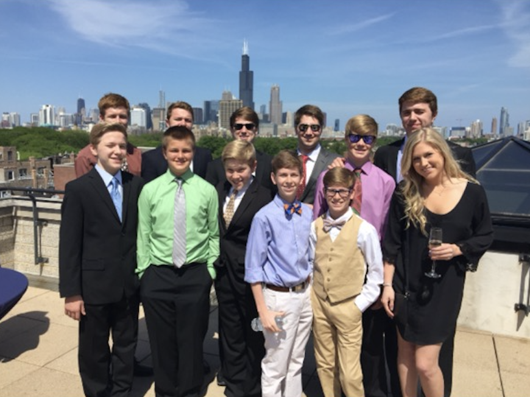

Barcelona will always hold a special place in my heart. I lived in Barcelona for a short while and I enjoyed my time there very much! The city is full of rich history, tasty food, and wonderful people! The culture in Barcelona is very interesting. People typically take naps during the day, eat dinners relatively late, and many people speak multiple languages there. I think Barcelona is especially interesting because of its history and its place within the country of Spain. Barcelona is located within the region of Catalonia, which is now independent from the rest of Spain. However, there is still heavy Spanish influence due to Barcelona's history of being a Spanish city. This aspect of the city makes for a very diverse culture!
I also love the scenery and the food in Barcelona. There are many places to go within the city, whether it be the historic Gothic Quarter, the seaside Barceloneta, or the scenic Bunkers del Carmel. No matter where you go in Barcelona, you are bound to find yourself in a beautiful location. You are also bound to find yourself surrounded by delicious food! Barcelona has some of the best tapas, crema catalana, patatas bravas, and, my favorite, paella. Barcelona has some of my favorite food and it is also one of my favorite cities in the world!
Los Angeles, California is very cool to me because it is so diverse. There is a very diverse population and very diverse geological features. On one side of the city there are the beautiful beaches by the Pacific Ocean, and on the other side of the city are scenic mountains and canyons through which people can go hiking. In between these two differing geological features is the city of Los Angeles itself, which has a very diverse population. My older brother used to live in Los Angeles and I was always very fond of visiting him there. It was always such an interesting and exciting place to be!
Chicago is a very important city to me because that is where the majority of my family members are from. My grandparents, cousins, aunts, and uncles have all lived in Chicago at some point in their lives. My dad is originally from Chicago as well, so my family visits the city often for family reunions and to see relatives. Since I am at school in Madison, Wisconsin now, I am relatively close to Chicago, so I am able to drive there easily on weekends to visit my relatives. Many of my cousins who live in Chicago are around the same age as I am, so I always have a fun time going to Chicago and seeing them. Since I have such a strong family connection to the city of Chicago, I have always been. Chicago sports fan. I am a huge fan of the Chicago Bears especially!
